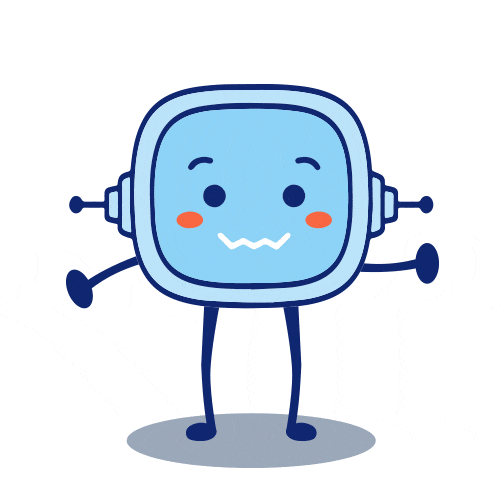
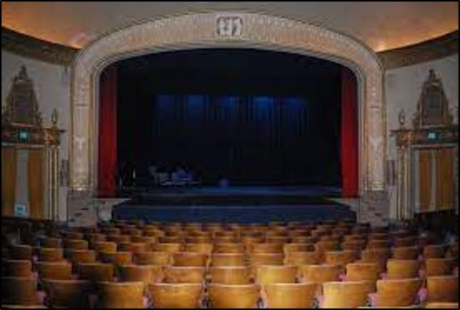
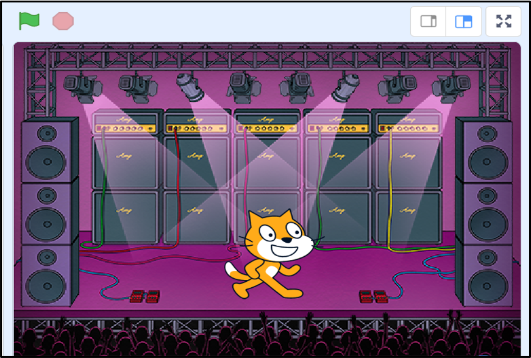
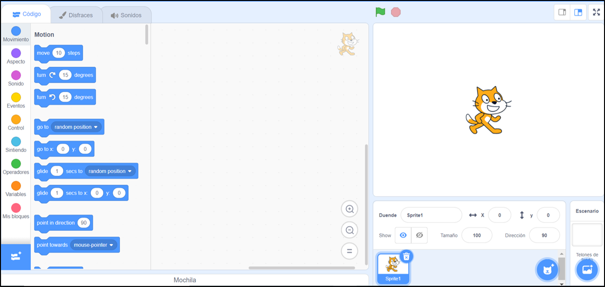
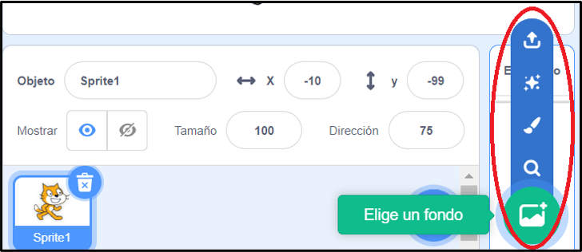
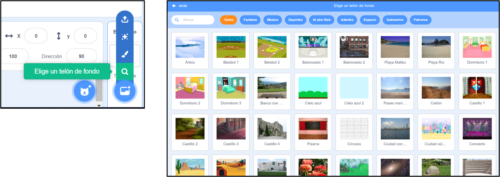
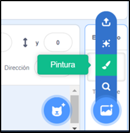
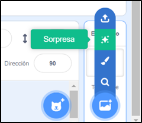
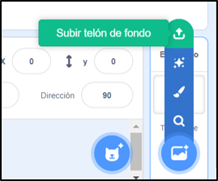

¿Te ha gustado el entorno de Scratch?Los fondos que puedes poner en el escenario de Scratch son muy importantes para hacer una buena presentación.
Pon atención en todo lo que puedes hacer y aprende con Scratch.

¿Te ha gustado el entorno de Scratch?Los fondos que puedes poner en el escenario de Scratch son muy importantes para hacer una buena presentación.
Pon atención en todo lo que puedes hacer y aprende con Scratch.
Me muevo siempre en un escenario que se parece muchísimo a los teatros de verdad. Además, puedo cambiar de fondo todas las veces que quiera.


Me muevo siempre en un escenario parecido al de los teatros.
Puedo cambiar de fondo todas las veces que quiera.
Piensa cuál sería el mejor fondo para tu escenario. Intenta relacionarlo con algo personal: colores y texturas preferidos, lugares entrañables...
Guarda esta idea en tu cabeza para intentar llevarla al escenario de Scratch más adelante.
Comparte en pareja la idea que has tenido, incluso puedes utilizarla en tus proyectos de Scratch.
Recuerda que puedes utilizar distintas formas para expresarte: con un dibujo, una imagen, de forma oral, escribiéndolo...
Ya has probado cómo poner fondos en el escenario.
Si no te ha quedado muy claro puedes seguir estas instrucciones:
Por defecto cualquier nuevo proyecto en Scratch tiene definido un fondo blanco que puede seleccionarse en la zona inferior derecha de la pantalla.

Para modificar el fondo de tu proyecto tienes los botones que vas a ver en la siguiente imagen.

En las páginas que vienen a continuación tienes la función de cada uno de ellos:
Scratch tiene definida una biblioteca de fondos en la que podrás encontrar un conjunto de imágenes para poder usarlas como fondos en tus proyectos:

Puedes hacer un dibujo tú mismo con una herramienta de dibujo que incorpora Scratch: 
Si te gustan las sorpresas, puedes elegir un fondo al azar:

Por último, puedes seleccionar un fondo desde un archivo que tengas guardado en tu ordenador o tablet:

Puedes consultar este vídeo tutorial:
El fondo del escenario está en blanco, ¿verdad?
Ya sabes que puedes modificarlo. Prueba haciendo los ejercicios que tienes a continuación.
Elige la opción que te venga mejor. Lo ideal es que pruebes a hacerlas todas.
Imagina que se levanta el telón del escenario y quieres sorprender al público. Pon un solo fondo en el escenario de Scratch, pero uno que te guste mucho.
Puedes elegirlo de la galería o utilizar alguna de las otras opciones que te ofrece el programa.
Inserta ahora al menos dos fondos para que puedas cambiar al menos una vez.
Elabora al menos uno de los fondos a partir de imágenes encontradas en la red. No olvides que deben ser imágenes libres de derechos de autor.
Juega con todas las posibilidades que te ofrece Scratch para colocar fondos y elige las opciones más creativas.
Pueden ser incluso imágenes de lugares visitados en algún viaje, de interiores de edificios…
Puedes editar los fondos que quieras para que resulten increíbles.
Obra publicada con Licencia Creative Commons Reconocimiento Compartir igual 4.0